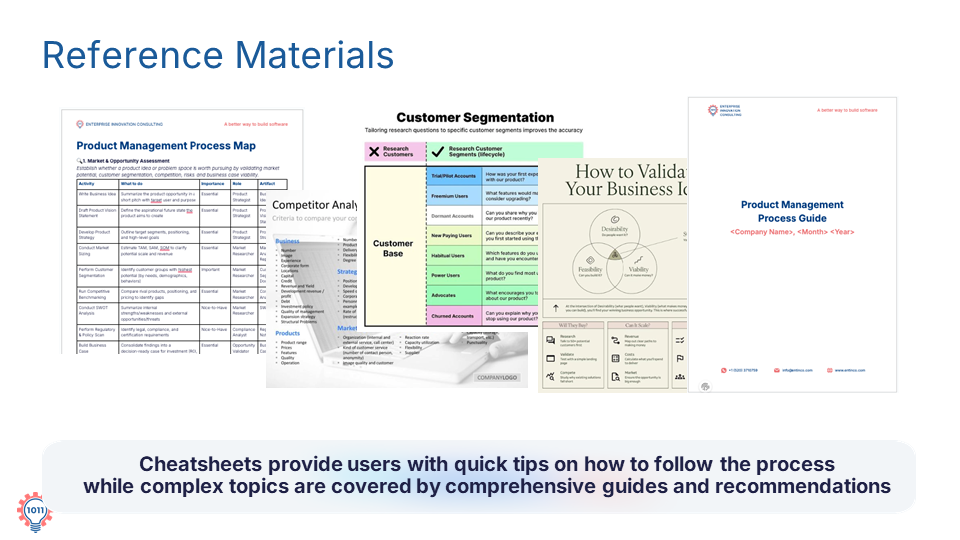

Supporting templates and custom assistants with cheat sheets and comprehensive guides to drive continuous learning and process compliance.
In addition to templates and assistants, we also rely on reference materials to support daily operations and complex workflows.
These come in two main forms: cheat sheets and guides.
Cheat sheets are designed for quick, everyday use. They provide simple tips and reminders to help you follow the process efficiently.Guides, on the other hand, are more detailed. They support complex tasks and provide deeper explanations and recommendations.
One of the most important resources is the process guide, which describes every step in detail and helps ensure that the entire workflow is followed correctly.
Together, these materials support continuous learning and improvement.

Download the cheatsheet and guide and answer the following questions: